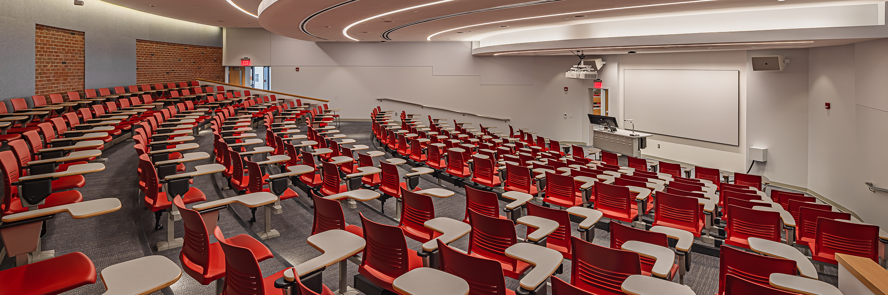

201-Basic Skills in The Digital Arts (3) Introduction to the fundamental skills and techniques used in digital arts, including graphic design, digital imaging, and multimedia production. Students will develop a portfolio of work demonstrating their proficiency in these areas.
This course provides a comprehensive introduction to the theoretical aspects of audio production, including acoustics, signal processing, and the physics of sound. Students will explore the fundamental principles that govern audio behavior and apply this knowledge to real-world production scenarios.
This course provides an introduction to the techniques and practices involved in recording and sampling audio. Students will learn about different recording methods, equipment, and software, as well as the principles of audio editing and manipulation.
This course introduces students to the fundamental concepts of music theory, including notation, scales, chords, and rhythm. Students will develop an understanding of how these concepts are applied in various musical contexts and will gain practical experience in analyzing and creating music.
This course provides students with hands-on experience in audio production, covering topics such as recording techniques, mixing, and mastering. Students will work on individual and group projects to develop their skills in producing high-quality audio content.
This course provides an introduction to the principles and practices of web design and development. Students will learn about user experience design, responsive design, and the use of various tools and technologies to create effective and engaging websites.
This course introduces students to the fundamentals of computer programming with a focus on creative applications. Students will learn programming concepts and techniques that can be applied to various creative projects, including interactive art, music composition, and digital media production.
This course provides an introduction to the principles and practices of sound design, including the creation and manipulation of sound for various media applications. Students will learn about sound synthesis, processing, and integration into visual and interactive projects.
Creative projects that integrate arts and technology, focusing on performance and interactive experiences.
This course builds upon foundational web design and development skills, focusing on advanced techniques and best practices. Students will explore topics such as web application development, advanced JavaScript frameworks, and performance optimization to create dynamic and responsive web experiences.
This course focuses on the development of dynamic media applications, including interactive websites, multimedia presentations, and digital installations. Students will learn advanced programming techniques and tools to create engaging and interactive experiences for various platforms.
This course focuses on the development of dynamic media applications, including interactive websites, multimedia presentations, and digital installations. Students will learn advanced programming techniques and tools to create engaging and interactive experiences for various platforms.
Students will learn the principles and practices of creating and editing video content for web applications, including storytelling, visual composition, and post-production techniques.
Advanced techniques in sound design, including spatial audio, immersive soundscapes, and integration with visual media.
This course provides an introduction to the principles and practices of sequencing and digital audio production. Students will learn about music composition, sound editing, and the use of various tools and technologies to create high-quality audio content for different applications.
This course provides an introduction to the principles and practices of game design, including the creation and implementation of game mechanics, level design, and player engagement strategies.
This course focuses on the principles and practices of designing user experiences for games, including usability testing, interface design, and player psychology.
This course focuses on the creation and design of motion graphics for various media platforms, including animation, visual effects, and interactive experiences.
For more information: